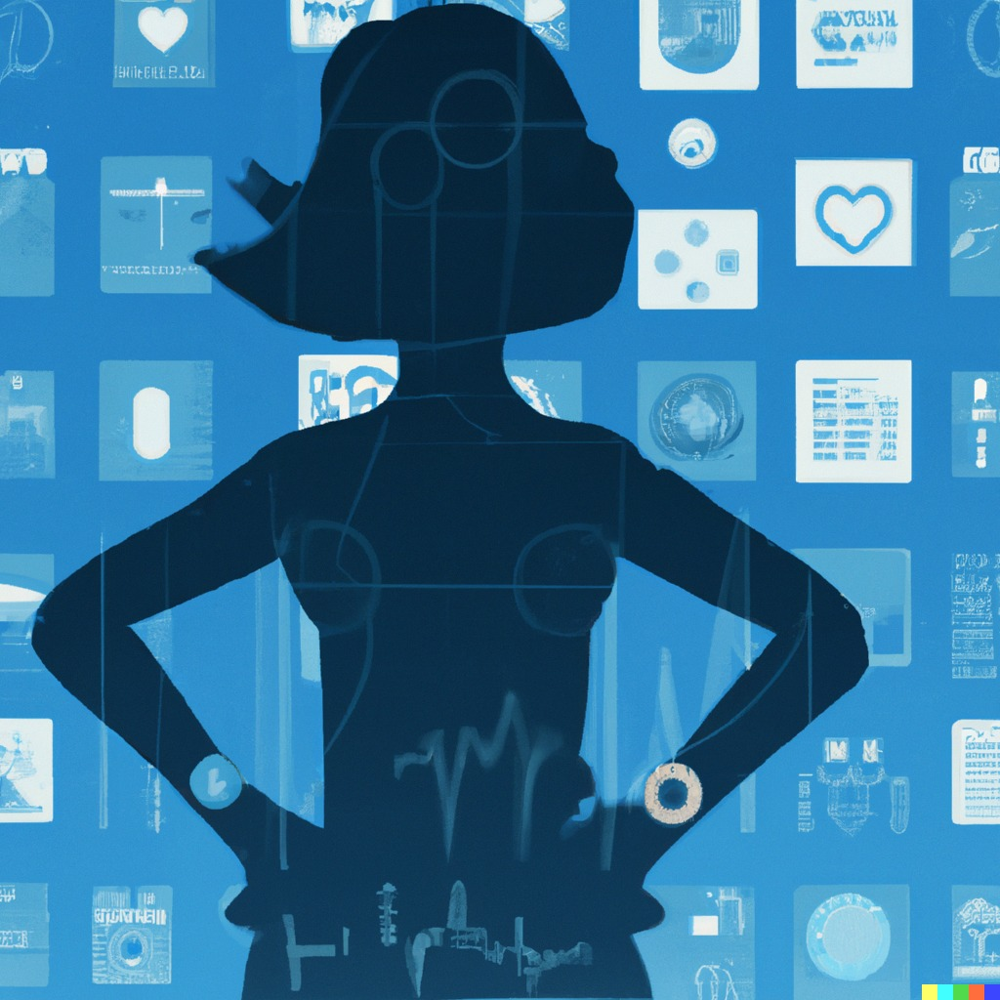
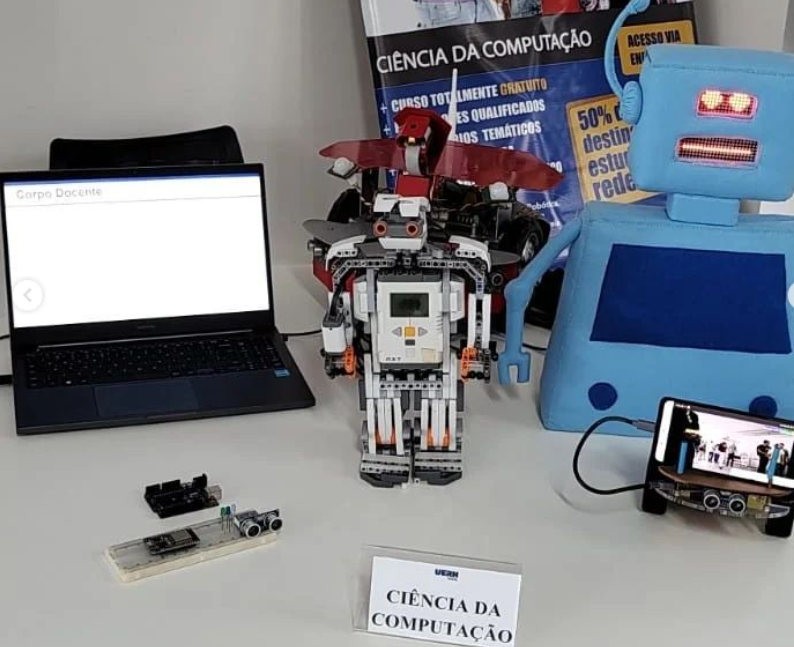
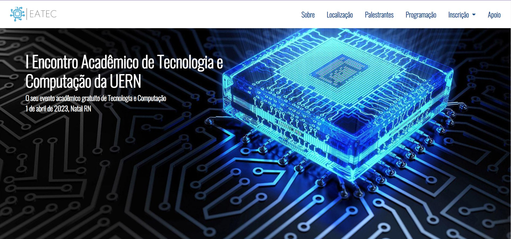

Palestra: Você já ouviu falar de computação afetiva?
Horário: 8am - 9am

Computação afetiva é uma área que engloba a ciência da computação, psicologia e ciência cognitiva. Nessa palestra, irei esclarecer o que é a área, sua importância para a sociedade e porque ela está sendo cada vez mais pesquisada no mundo.
Apresentação dos grupos de pesquisa.
9am - 9:30am

Projetos e pesquisas feitos nos laboratórios LAR e LUMEN
Mesa redonda: ChatGPT.
9:30am - 10:20am

Uma discussão leve e descontraída sobre essa tecnologia que veio pra mudar o mundo.
Apresentação dos trabalhos top 3 do EATEC.
10:40am - 11:10am

1° Giulia Moscoso - REALIDADE AUMENTADA E VIRTUAL: QUAL A DIFERENÇA?
2° Emilly Y. A. Lima, Luís Henrique S. de Oliveira, Maria Klara B. Sena - SEMÁFORO ELETRÔNICO COM CIRCUITOS DIGITAIS
3° Matheus Sobreira Benevides, Rodrigo Neves Duarte, João Lucas Lima da Silva - UM ESTUDO SOBRE REPRESENTAÇÃO DO CRESCIMENTO INFANTIL COM AJUSTE DE CURVA SIMPLES